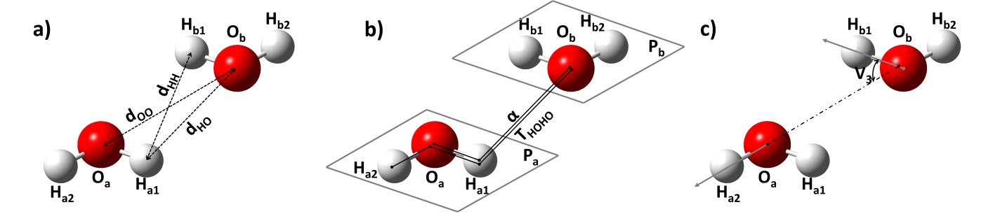

cite this: Milovanovic, Zaric ... Is there any significant attraction in water beyond its classical hydrogen bonding: Joint CSD and ab-initio calculation study. 2020
 Figure 1. The geometric parameters and atom labeling used for the description of intermolecular interactions between two water molecules. Atoms with subscript a represent atoms from one water molecule, and atoms with subscript b represent atoms from another water molecule. (a) The distance between two oxygen atoms is dOO. The Ha1 represents hydrogen atom that has the shortest O···H distance (Ob···Ha1), dOH. The Hb1 represents hydrogen atom that has shorter Ha1···Hb distance. The distance Ha1···Hb1 is dHH. (b) The angle Oa-Ha1···Ob is angle α. The Pa/Pb is dihedral angle between the water planes. The torsion angle Ha2-Oa1-Ha1-Ob is THOHO. (c) The angles between vectors containing Ox-Hy bonds are denoted as V1-4. The V1 represents the angle Oa_Ha1-Ob_Hb1, the V2 represents the angle Oa_Ha1-Ob_Hb2, the V3 represents the angle Oa_Ha2-Ob_Hb1, and the V4 represents the angle Oa_Ha2-Ob_Hb2. Only the V3 is shown, while the others are omitted due to clarity.
$output"; } ?> Contact: ivana_stankovic@chem.bg.ac.rs